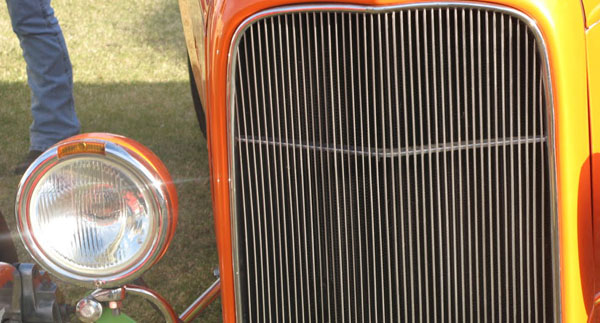

Hot rods are typically American cars with large engines modified for linear speed. The origin of the term "hot rod" is unlcear.One explanation is that the term is a contraction of "hot roadster,"meaning a roadster that was modified for speed. Another explanation is that the mufflers were exposed and thus there was a "hot rod" or hot muffler neck when the vehicle was running. Open roadsters were the cars of choice to modify because they were light. Hot Rod may also refer to the connecting rods, cam, or pushrods inside the engine or to the exposed frame rails of such an automobile. To me, the American hot rod is a thing of beauty created by artisans who use steel, rubber, and glass as their canvas.